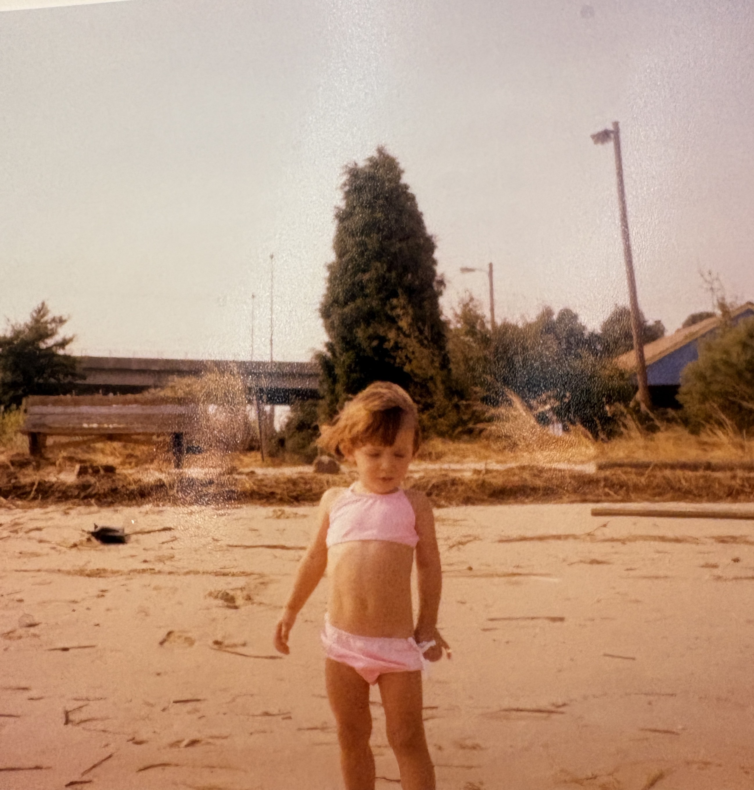

For Sarah
When I was a kid, I would look through my mothers Victoria's Secret magazines that sat in the downstairs bathroom, off from the kitchen. Cluttered in an antique crock, and stuffed with my fathers boat and motorcycle magazines. I would flip through those glossy pages and see a glimpse of my future. I wanted to be a part of that glamorous process, any part. I would dream about being a girl, in a space I called my own, dressing up, working in the arts, maybe even in the city. In this website I want to show appreciation for how far I have come, a time capsule of my life right now. Focusing on the small things in my life that would make my younger self so proud, a message to my little self. I am old enough to remember the web looking like simple code, in a nostalgic, 2008 kinda way. I can imagine my 10 year old self on the family's chunky Dell computer that was gifted from my grandfather, state of the art, at the time. I imagine emailing my 10 year old self the link to this website. A website I coded myself, filled with information on who I ended up to be. 10 year old Sarah would be so excited that I got an email from a friend, clicking on the link and becoming wide eyed at the discovery that I became everything I had ever dreamed of.
